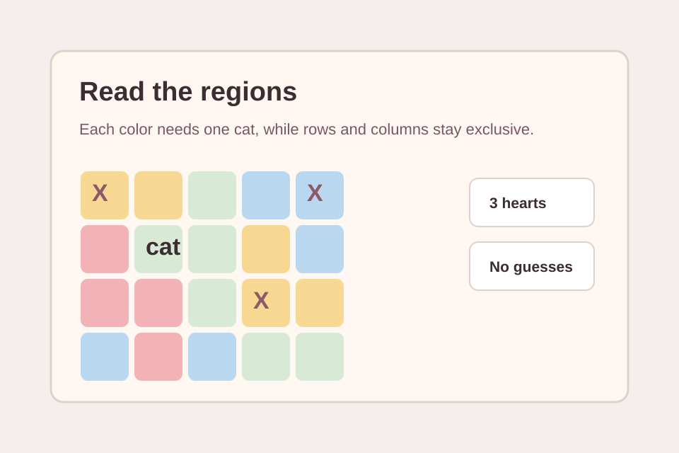
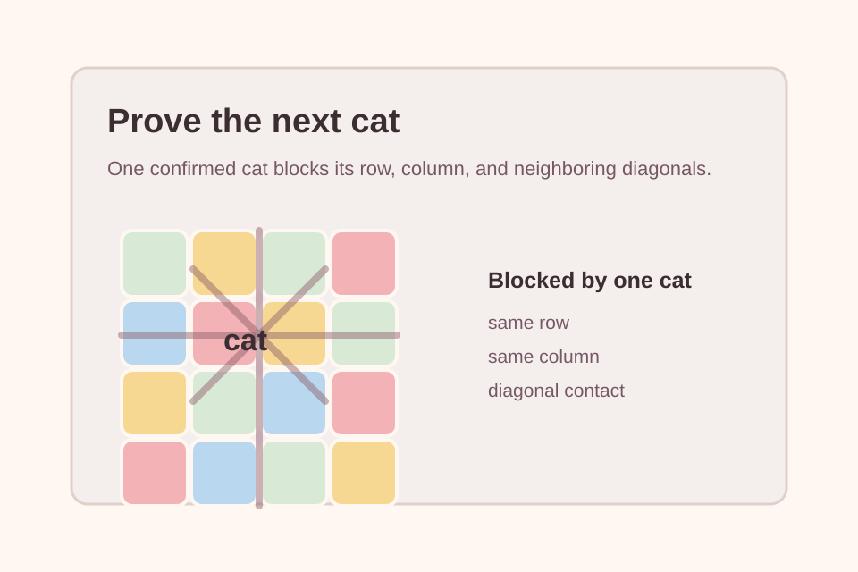

Search intent
People searching for Meowdoku usually want a quick way to play, a plain-English rule check, tips for avoiding guesses, and official app links when they prefer the mobile release.
 Meowdoku online
Meowdoku online
Place every cat with logic, not luck, in a cozy region puzzle you can play right in the browser. Start with the browser build, then use the rules and tips below to make every placement explainable.
One cat per color region. Rows, columns, and touching corners all matter.
Meowdoku
Playable browser puzzle
Play Meowdoku online for free: place cats in colored regions, avoid row and column conflicts, learn the rules, and solve without a download. The appeal is small-rule, high-focus deduction: every cat placement should follow from the board, not from a lucky guess.
People searching for Meowdoku usually want a quick way to play, a plain-English rule check, tips for avoiding guesses, and official app links when they prefer the mobile release.
Meowdoku is a cat-placement logic puzzle. Each colored region needs exactly one cat, each row and column can hold only one cat, and cats must not touch each other, including diagonally.
Start by reading the colored regions, then use rows, columns, and nearby cells to eliminate impossible cat positions before you commit.
Use a finger or mouse to inspect cells and mark impossible spots. Keep the board readable by clearing marks that no longer help your deduction.
The official app describes cat placement as a double-tap action. Confirm only when the region, row, column, and no-touching rules all agree.
Hints are best for checking a deduction path, not replacing it. If a board stalls, first look for a row, column, or colored region with only one legal cell left.
Meowdoku is easy to learn because the rule set is short. The difficulty comes from applying all constraints at the same time.
Every colored territory on the board has one valid cat position. Start by scanning the smallest or most cramped regions because they usually lose options first.
A solved board has no row or column with two cats. Once a cat is confirmed, treat the rest of that row and column as blocked for every other region.
Cats cannot touch, including at diagonal corners. Before committing a cat, check the surrounding cells and mark any spots that would violate the spacing rule.
The mobile app uses hearts for mistakes, so random double-taps are expensive. Build each move from region count, row pressure, column pressure, or adjacency proof.
A good solve feels calm because every mark has a reason. Use these habits when the board starts looking crowded.
Tiny regions, edge regions, and cells boxed in by diagonal pressure are the best opening checks. They often reveal forced cats before the larger shapes make sense.
An X is useful only when it came from a reason: same row, same column, same region, or too close to a cat. Reasoned marks turn a crowded board into a smaller puzzle.
When two regions compete for the same rows or columns, test what each placement would block. A contradiction in one region often proves the other.
If a cat placement cannot be explained in one sentence, wait. Meowdoku is generous to patient solvers and much tougher on moves made because a cell merely looks likely.
The online version is useful when you want a quick puzzle break, a rules refresher, or a desktop-friendly way to think through Meowdoku logic before opening the mobile app.


Yes. This site includes a playable browser panel so you can start a Meowdoku-style puzzle from the homepage without installing the mobile app.
Place exactly one cat in every colored region. Cats must not share a row or column, and they cannot touch each other, including diagonally.
Not exactly. It borrows Sudoku-like constraint thinking, but the board is about colored regions, spatial elimination, and cat spacing rather than filling numbers.
No. This launch intentionally avoids ratings, download counts, awards, and reviews. Official store links are provided without repeating promotional stats.
Use the App Store or Google Play links on this page for the Oakever Games mobile listings. This browser site is independent and is not an official Oakever Games website.